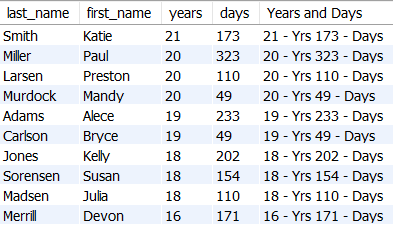
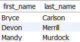
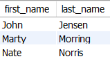
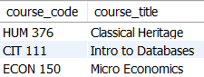
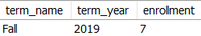
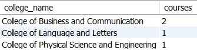
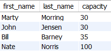
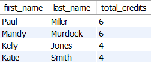

Instructions: Write the queries listed below using the database you created in part 1 last week. Save your file as UniversityQueries.sql. Use comments to number your queries. Use single quotes for string values. Also, include the proper forward engineering and inserts above the queries so the grader can have your database to run your queries. If you need help remembering how to do some of these queries, please watch the videos at the bottom of this page under "Helpful Resources."
Query 1: Students, and their birthdays, of students born in September. Format the date to look like it is shown in the result set. Sort by the student's last name.
Query 2: Student's age in years and days as of Jan. 5, 2017. Sorted from oldest to youngest. You can assume a 365 day year and ignore leap day. (Hint: Use modulus for days left over after years. The 5th column is just the 3rd and 4th column combined with labels.)

Query 3: Students taught by John Jensen. Sorted by student's last name

Query 4: Instructors Bryce will have in Winter 2018. Sort by the faculty's last name.

Query 5: Students that take Econometrics in Fall 2019. Sort by student last name.

Query 6: Report showing all of Bryce Carlson's courses for Winter. Sort by the name of the course.

Query 7: The number of students enrolled for Fall 2019

Query 8: The number of courses in each college. Sort by college name.

Query 9: The total number of students each professor can teach in Winter 2018. Sort by that total number of students (teaching capacity).

Query 10: Each student's total credit load for Fall 2019, but only students with a credit load greater than three. Sort by credit load in descending order.

Submit your UniversityQueries.sql file.
Week 10:
https://cit111byui.github.io/sql_code/w10_aggregate_practice.sql
Week 9:
https://cit111byui.github.io/sql_code/w09_joins_practice.sql
Week 8:
https://cit111byui.github.io/sql_code/w08_functions_practice.sql
Week 7:
Single Table Queries Practice Video
https://cit111byui.github.io/sql_code/w07_querying_v_art_and_bike.sql